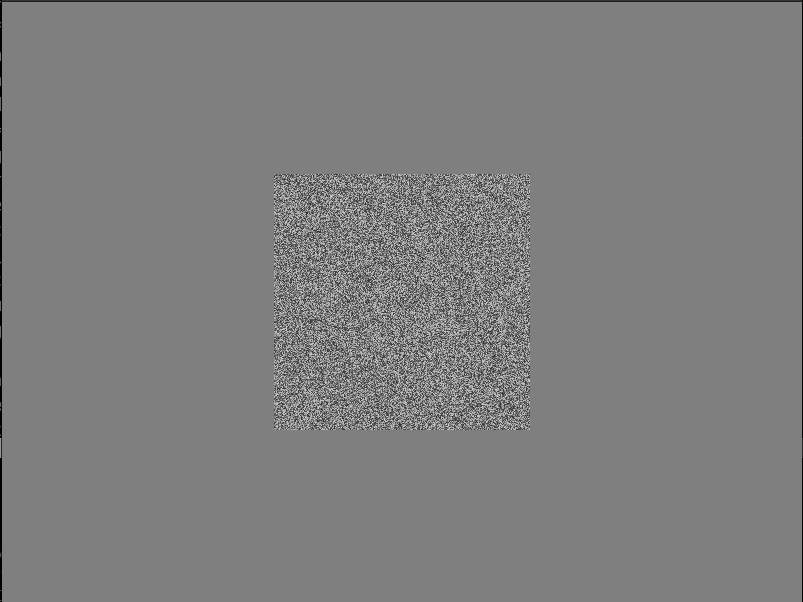
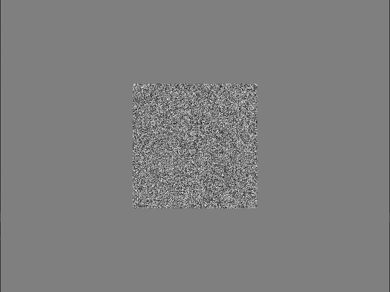

Show stimuli#
This page show how an example of how to display stimuli one by one from a list. The script initializes HRL, generates three random textures of different contrast, and presents one at the time in the center of the screen. By pressing the left and right button you can switch which texture to show.
It demonstrates also modularity: stimuli generation, display, and processing of button responses are separated in functions. This makes our code clearer and easy to read and reuse later.
Set-up#
We start by importing HRL, and setting some global variables for
the window size.
from hrl import HRL
import numpy as np
import sys
# Define window parameters
SHAPE = (600, 800) # Desired shape of the drawing window (height, width)
CENTER = (SHAPE[0] // 2, SHAPE[1] // 2) # Center of the drawing window
Modularizing the code#
In the minimal example
we coded all steps in a linear fashion, in order to explain better HRL
usage.
In practice, it is better to modularize your code. This means, to define functions that do one and only one job, and are called multiple times during the experiment execution.
Here we write the following functions:
stimuli: a function that defines and computes all stimuli to be showndisplay_stim: function that displays the stimulus usingHRLselect: a function that depending on button presses, it selects which stimulus to show, from a given list.mainfunction, which is the top of the hierarchy and coordinates everything
After modularizing our code, the final structure will be like this:
from hrl import HRL
import numpy as np
# (...) other imports
# SET-UP
# (global variables)
# Function definitions
def stimuli(): # (define all stimuli as numpy arrays)
...
def display_stim(ihrl, ...):
...
def select(ihrl, ...):
...
def main(ihrl):
...
if __name__ == "__main__":
# Create HRL interface object
ihrl = HRL(
graphics="gpu", # Use the default GPU as graphics device driver
# graphics='datapixx', # In the lab, we use the datapixx device driver
inputs="keyboard", # Use the keyboard as input device driver
# inputs="responsepixx", # In the lab, we use the responsepixx input device
hght=SHAPE[0],
wdth=SHAPE[1],
scrn=0, # Which screen (monitor) to use
fs=False, # Fullscreen?
bg=0.5, # background intensity (black=0.0; white=1.0)
)
experiment_main(ihrl)
ihrl.close()
The last part of the code, which starts with if __name__ == "__main__",
is the python-way to ensure that that enclosed code (our experiment)
is executed only when the code is run as a script, from the command-line.
This is good practice in python, as all python files are also
importable. This bit ensures that the experiment code is not
executed if imported.
Inside this section we initialize HRL and call the main function,
which is the one coordinating the rest. When the main function finishes,
it closes HRL.
Function main#
The main function first generate all stimuli by calling
the function stimuli.
Then, in an infinite loop, it shows the current stimulus
(indexed in variable stim_idx) by calling
display_stim, and then calls the function select which waits for a
button press. The function select returns a new stimulus index which
will be shown. The loop is broken by pressing Escape, which triggers
a system exit call (see select definition below).
def experiment_main(ihrl):
stims = stimuli()
stim_names = [*stims.keys()]
print(f"Stimuli available: {stim_names}")
stim_idx = 0
while True:
# Main loop
try:
# Display stimulus
stim_name = stim_names[stim_idx]
print(f"Showing {stim_name}")
stim_image = stims[stim_name]
display_stim(ihrl, stim_image)
# Select next stim
stim_idx, _ = select(ihrl, value=stim_idx, rng=len(stim_names) - 1)
except SystemExit as e:
# Cleanup
print("Exiting...")
ihrl.close()
raise e
Function stimuli#
Defines all stimuli, returning a dictionary with its name as key, and the stimulus itself as a numpy array as value
def stimuli():
""" Defines three random textures with low, mid and high contrast"""
high = np.random.uniform(low=0.0, high=1.0, size=(256, 256))
mid = np.random.uniform(low=0.2, high=0.8, size=(256, 256))
low = np.random.uniform(low=0.35, high=0.65, size=(256, 256))
stims = {'low contrast ': low,
'mid contrast ': mid,
'high contrast ': high}
return stims
Function display_stim#
def display_stim(ihrl, stim_image):
"""
In this "experiment", we just display a collection of stimuli, one at a time.
Here we define a function to display a single stimulus image centrally on the screen.
"""
# Convert the stimulus image(matrix) to an OpenGL texture
stim_texture = ihrl.graphics.newTexture(stim_image)
# Determine position: we want the stimulus in the center of the frame
pos = (CENTER[1] - (stim_texture.wdth // 2), CENTER[0] - (stim_texture.hght // 2))
# Create a display: draw texture on the frame buffer
stim_texture.draw(pos=pos, sz=(stim_texture.wdth, stim_texture.hght))
# Display: flip the frame buffer
ihrl.graphics.flip()
return
Function select#
We’ll use the Left/Right keys to go through the list of stimuli, and the Escape/Space keys to terminate.
Here we define a function that captures and processes responses. On Escape, it raises a SystemExit exception to terminate. On Left/Right, it decreases/increases the index into the list of stimuli by 1. To prevent IndexErrors, make sure that the index cannot be <0 or >max
def select(ihrl, value, rng):
"""Allow participant to select a value from a range of options
Parameters
----------
ihrl : hrl-object
HRL-interface object to use for display
value : int
currently selected option
rng : (int, int)
min and max values to select. If one value is given, assume min=0
Returns
-------
int
currently selected option
bool
whether this option was confirmed
Raises
------
SystemExit
if participant/experimenter terminated by pressing Escape
"""
try:
len(rng)
except:
rng = (0, rng)
accept = False
press, _ = ihrl.inputs.readButton(btns=("Left", "Right", "Escape", "Space"))
if press == "Escape":
# Raise SystemExit Exception
sys.exit("Participant terminated experiment.")
elif press == "Left":
value -= 1
value = max(value, rng[0])
elif press == "Right":
value += 1
value = min(value, rng[1])
elif press == "Space":
accept = True
return value, accept
Full example#
Putting everything together, we have an script that initializes HRL, generates three random textures of different contrast, and presents one at the time in the center of the screen. By pressing the left and right button you can switch which texture to show.
from hrl import HRL
import numpy as np
import sys
# Define window parameters
SHAPE = (600, 800) # Desired shape of the drawing window (height, width)
CENTER = (SHAPE[0] // 2, SHAPE[1] // 2) # Center of the drawing window
def stimuli():
""" Defines three random textures with low, mid and high contrast"""
high = np.random.uniform(low=0.0, high=1.0, size=(256, 256))
mid = np.random.uniform(low=0.2, high=0.8, size=(256, 256))
low = np.random.uniform(low=0.35, high=0.65, size=(256, 256))
stims = {'low contrast ': low,
'mid contrast ': mid,
'high contrast ': high}
return stims
def display_stim(ihrl, stim_image):
"""
In this "experiment", we just display a collection of stimuli, one at a time.
Here we define a function to display a single stimulus image centrally on the screen.
"""
# Convert the stimulus image(matrix) to an OpenGL texture
stim_texture = ihrl.graphics.newTexture(stim_image)
# Determine position: we want the stimulus in the center of the frame
pos = (CENTER[1] - (stim_texture.wdth // 2), CENTER[0] - (stim_texture.hght // 2))
# Create a display: draw texture on the frame buffer
stim_texture.draw(pos=pos, sz=(stim_texture.wdth, stim_texture.hght))
# Display: flip the frame buffer
ihrl.graphics.flip()
return
def select(ihrl, value, rng):
"""Allow participant to select a value from a range of options
Parameters
----------
ihrl : hrl-object
HRL-interface object to use for display
value : int
currently selected option
rng : (int, int)
min and max values to select. If one value is given, assume min=0
Returns
-------
int
currently selected option
bool
whether this option was confirmed
Raises
------
SystemExit
if participant/experimenter terminated by pressing Escape
"""
try:
len(rng)
except:
rng = (0, rng)
accept = False
press, _ = ihrl.inputs.readButton(btns=("Left", "Right", "Escape", "Space"))
if press == "Escape":
# Raise SystemExit Exception
sys.exit("Participant terminated experiment.")
elif press == "Left":
value -= 1
value = max(value, rng[0])
elif press == "Right":
value += 1
value = min(value, rng[1])
elif press == "Space":
accept = True
return value, accept
def experiment_main(ihrl):
stims = stimuli()
stim_names = [*stims.keys()]
print(f"Stimuli available: {stim_names}")
stim_idx = 0
while True:
# Main loop
try:
# Display stimulus
stim_name = stim_names[stim_idx]
print(f"Showing {stim_name}")
stim_image = stims[stim_name]
display_stim(ihrl, stim_image)
# Select next stim
stim_idx, _ = select(ihrl, value=stim_idx, rng=len(stim_names) - 1)
except SystemExit as e:
# Cleanup
print("Exiting...")
ihrl.close()
raise e
if __name__ == "__main__":
# Create HRL interface object
ihrl = HRL(
graphics="gpu", # Use the default GPU as graphics device driver
# graphics='datapixx', # In the lab, we use the datapixx device driver
inputs="keyboard", # Use the keyboard as input device driver
# inputs="responsepixx", # In the lab, we use the responsepixx input device
hght=SHAPE[0],
wdth=SHAPE[1],
scrn=0, # Which screen (monitor) to use
fs=False, # Fullscreen?
bg=0.5, # background intensity (black=0.0; white=1.0)
)
experiment_main(ihrl)
ihrl.close()
Screenshots#
At mid contrast 
At high contrast 